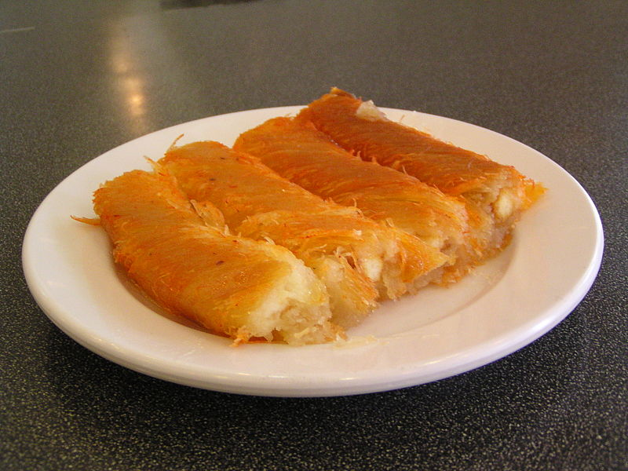

Kunafa

Ingredients
For the syrup:
- 4 cups (1 kg) Redpath® Granulated Sugar
- 2 cups (500 ml) water
- 1 tsp (5 ml) lemon juice
For the kunafa:
- ½ kg shredded phyllo dough
- 9 cups (1 kg) mozzarella cheese, grated
- 1½ cup (284 g) butter, melted
- Orange food colouring, powdered or liquid (optional)
- ¾ cup (100 g) crushed pistachios
Steps
For the simple syrup:
Mix the sugar, water, and lemon juice together in a pot. Place over medium-high heat and bring to a boil, stirring occasionally until the sugar dissolves. Remove from the heat and set aside to cool completely.
For the kunafa:
- Preheat oven to 375°F (190°C).
- Make sure to thaw the shredded phyllo dough before using. Transfer it to a large bowl, then using your hands, begin pulling the strands apart, breaking them into smaller and smaller pieces until the dough is completely shredded.
- Pour the melted butter and food colouring (if using) over the shredded phyllo and mix in with your hands until butter and food colouring are evenly distributed. It is best to use a pair of latex gloves so your hands don't get colouring on them.
- Spread half the dough in a large round cake pan or a 9x13 baking dish. Press firmly into the pan.
- Spread the cheese over top of the dough, leaving at least an inch of space around the edges.
- Cover the cheese with the remaining dough, making sure to cover the edges first to seal the cheese and prevent it from leaking during baking. Press in firmly.
- Bake in the preheated oven for 15 minutes. Once baked, remove from the oven and carefully flip over onto a serving tray or plate. Gently lift the baking pan away from the knafeh.
- Spoon the cooled simple syrup over the knafeh, then gently pour the remaining syrup over top. Adjust the amount of simple syrup you use to suit your tastes. Decorate with crushed pistachios and serve warm. Knafeh is best the day it’s made, but leftovers will keep well in the fridge for up to 3 days, just warm them up for 10 - 20 seconds in the microwave before serving